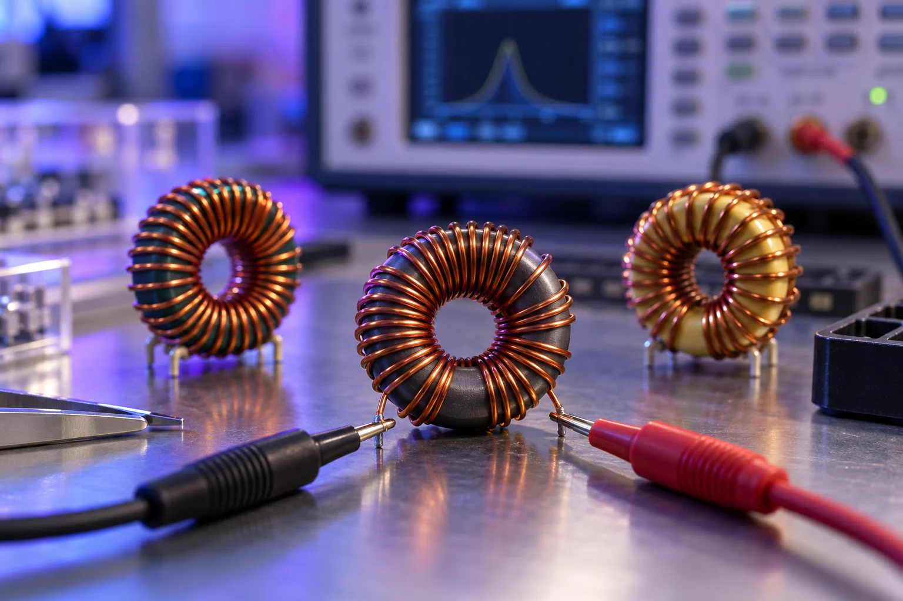

Préparer et examiner
Nettoyage des données et analyse des distributions. Le script Python utilise pandas, NumPy et SciPy pour examiner les variables et tester leur normalité.
04 / DATA & QUALITÉ
Modélisation statistique de bobines toriques : expliquer la variabilité de l’inductance et identifier les paramètres de fabrication à surveiller.

01 / LA QUESTION
Toutes les dimensions d’un composant varient. Toutes n’expliquent pas autant la variation de sa performance.
À partir des mesures de bobines produites en série, nous avons cherché à prédire l’inductance, puis à hiérarchiser les paramètres influents. L’objectif est de concentrer le contrôle sur les grandeurs utiles.
EXPLORER LES DONNÉES DU PROJET
Changez la variable pour observer sa relation avec l’inductance mesurée.
L’entrefer est l’un des paramètres influents identifiés dans le rapport. Le nuage montre une tendance, que la régression multiple permet d’étudier avec les autres variables.
Mesures extraites du tableur collectif MINA. Le graphique est exploratoire : une relation visuelle ne démontre pas, à elle seule, une causalité.
02 / LA DÉMARCHE
Nettoyage des données et analyse des distributions. Le script Python utilise pandas, NumPy et SciPy pour examiner les variables et tester leur normalité.
La régression multiple relie les variables mesurées à l’inductance. L’étude de leur influence permet de rechercher un modèle plus ciblé.
Comparer les relations statistiques au modèle du circuit magnétique pour comprendre pourquoi certaines dimensions jouent un rôle majeur.
03 / LE RÉSULTAT
L’entrefer et la section du tore ressortent comme deux leviers majeurs dans l’analyse de l’inductance.
Le rapport propose de cibler leur variabilité plutôt que de multiplier les contrôles indifférenciés. C’est une recommandation issue du modèle : aucune réduction effectivement obtenue en production n’est revendiquée ici.
Un bon ajustement aux données étudiées ne garantit pas la même performance sur une nouvelle série. La validation sur d’autres données et la vérification des hypothèses restent nécessaires avant un usage industriel.
04 / CE QUE J’EN RETIENS
Le calcul fait apparaître une relation. La compréhension du système aide à l’interpréter.
Ce projet prolonge mon parcours en physique par une approche statistique. Il montre comment utiliser la programmation pour examiner les données, puis traduire l’analyse en une décision de contrôle.
Travail collectif avec deux autres étudiants. Les analyses et recommandations sont celles du rapport MINA.
Découvrir une autre facette de mon parcours : le travail au sein des équipages.